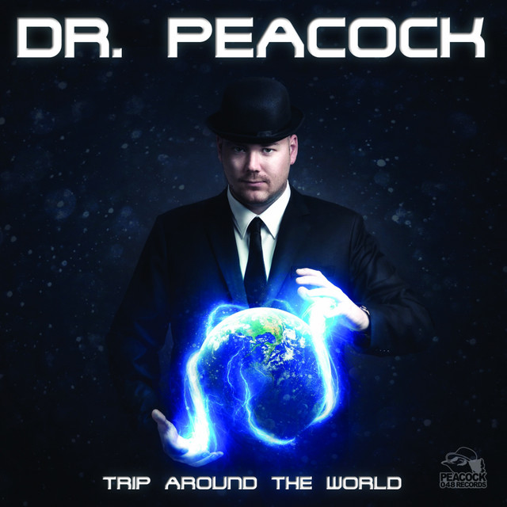

extravaganza - D'ort, Relianze

Bon Gepakt (D'ort remix) - D'ort

Trip to France - Dr Peacock
Sjeng oan de geng - Dr Peacock

Keelhauled - Sefa, Dr Peacock
Frenchcore has a rich history
deeply rooted in the cultural fabric of France. Emerging in the late 1990s as a subgenre of hardcore,
Frenchcore combined the high-energy beats of hardcore with traditional French sounds, creating a
unique and rebellious musical experience.
Originating from the vibrant rave culture of cities like Marseille and Paris, Frenchcore drew
inspiration from the energetic and fast-paced nature of hardcore techno. It infused this foundation with
distinct elements of French musical heritage, incorporating samples from folk music, accordion melodies,
and snippets of French dialogue. This fusion resulted in a captivating sonic identity that set
Frenchcore apart from other genres.
One of the pioneers of Frenchcore was Radium, an artist who
established the "Audiogenic" record label in 1997. Radium's tracks, such as "Rockin Fire" and "Renegade
Return," showcased the early essence of Frenchcore and set the stage for its evolution. Another
influential figure in the genre's early years was Micropoint, who pushed the boundaries of hardcore
techno with tracks like "E-Man" and "Hard Breaks."
As Frenchcore gained momentum, it started to spread beyond France's borders and gained international
recognition. Festivals such as "Masters of Hardcore" and "Defqon.1" featured dedicated Frenchcore
stages, solidifying its position within the broader hardcore electronic music scene. Artists like Sefa,
Remzcore, and Billx emerged as prominent figures, bringing their unique styles and contributing to the
genre's growth.
Frenchcore's evolution has seen experimentation with tempo, incorporation of diverse musical elements,
and even the inclusion of live instrumentation. This continuous exploration has helped the genre
maintain its freshness and appeal to a broad audience.
Beyond its influence in the music world,
Frenchcore has also made an impact on popular culture. Its energetic beats and rebellious spirit have
inspired various forms of media, including video games and movies. Dedicated Frenchcore events and
communities have sprouted worldwide, uniting fans who share a passion for this distinct genre.
extravaganza - D'ort, Relianze
Bon Gepakt (D'ort remix) - D'ort
Trip to France - Dr Peacock
Sjeng oan de geng - Dr Peacock
Keelhauled - Sefa, Dr Peacock